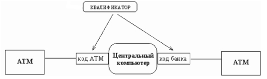
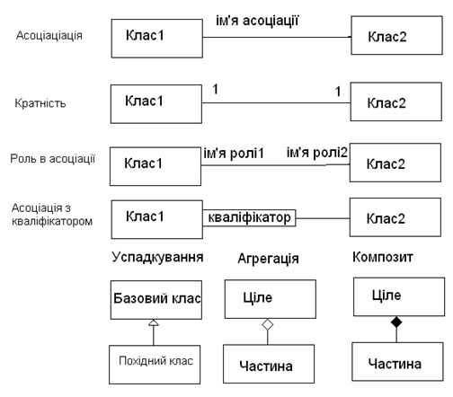
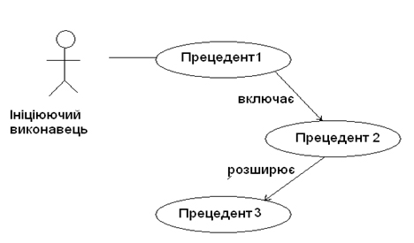

Версія 1. Інкапсуляція. Інтерфейси класів. Діаграми прецедентів і класів.
Мета:
- здійснити об’єктно-орієнтований аналіз та об’єктно-орієнтоване проектування предметного середовища засобами UML (Unified Modeling Language)
Теоретичні відомості
Об'єктно-орієнтований аналіз
- Етапи об’єктно-орієнтованого проектування та моделювання
- Ідентифікація класів
- Ідентифікація атрибутів
- Ідентифікація операцій (методів)
- Відношення між класами
Етапи об’єктно-орієнтованого проектування та моделювання
Процес розробки візуальних моделей в нотації мови UML 2.0 представляється у формі послідовної деталізації модельних представлень від концептуальної моделі до логічної, а потім й до фізичної моделі програмної системи, що розглядається. Можна виділити такі етапи ООA та OOD:- Визначення типів взаємодій між користувачем та системою. Побудова діаграми прецедентів (варіантів використання).
- Ідентифікація класів. Побудова діаграм класів і об’єктів.
- Ідентифікація атрибутів. Доповнення діаграми класів атрибутами.
- Ідентифікація операцій (методів). Доповнення діаграми класів методами.
- Визначення відношень між класами. Доповнення діаграми класів відношеннями між класами.
- Визначення алгоритмів методів (функцій). Побудова діаграм діяльності, послідовностей, станів і переходів, кооперації.
Ідентифікація класів
Клас(class) - елемент моделі, який описує множину об’єктів, що мають однакові специфікації характеристик, обмежень та семантики. Діаграма класів(class diagram) – діаграма, що призначена для представлення моделі статичної структури програмної системи в термінології класів об’єктно-орієнтованого програмування.Для ідентифікації класів слід виконати такі дії:
- Здійснити аналіз постановки задачі та визначити усі іменники, тобто побудувати словник даних.
Аналіз опису предметного середовища дозволяє визначити об'єкти і класи об'єктів, пов'язані з прикладною проблемою. Всі класи мають бути осмислені в даній прикладній області; класів, пов'язаних з комп'ютерною реалізацією, як наприклад список, стік і тому подібне на цьому етапі вводити не слід.
Почати слід з виділення можливих класів з опису постановки прикладного завдання (технічного завдання і іншої документації, наданої замовником). При виділенні можливих класів кожному іменнику з опису постановки завдання зазвичай зіставляється можливий клас. - Список можливих класів має бути проаналізований з метою виключення з нього непотрібних класів. Такими класами є:
- надлишкові класи: якщо два або декілька класів виражають однакову інформацію, слід зберегти лише один з них;
- нерелевантні (що не мають прямого відношення до проблеми) класи: для кожного імені можливого класу оцінюється, наскільки він необхідний в майбутній системі; нерелевантні класи виключаються;
- нечітко визначені (з точки зору даної проблеми) класи;
- атрибути: деяким іменникам більше відповідають не класи, а атрибути; такі іменники, як правило, описують властивості об'єктів (наприклад, ім'я, вік, вага, адреса і тому подібне);
- операції: деяким іменникам більше відповідають не класи, а імена операцій (наприклад, телефонний виклик навряд чи означає який-небудь клас);
- ролі: деякі іменники визначають імена ролей в об'єктній моделі (наприклад, власник, водій, начальник, службовець; всі ці імена пов'язані з ролями в різних залежностях об'єктів класу чоловік);
- реалізаційні конструкції: іменам, більше пов'язаним з програмуванням і комп'ютерною апаратурою, не слід на даному етапі зіставляти класів, оскільки вони не відображають особливостей проектованої прикладної системи; приклади таких імен: підпрограма, процес, алгоритм, переривання і тому подібне.
[up]
Ідентифікація атрибутів
Атрибут(attribute) класу служити для представлення окремої структурної характеристики чи властивості, які є загальними для всіх об’єктів даного класу. Атрибути зазвичай відповідають іменникам; наприклад колір автомобіля (властивість об'єкту), позиція курсору (достаток об'єкту). Атрибути, як правило, слабо впливають на структуру об'єктної моделі.Для ідентифікації атрибутів слід виконати такі дії.
- У постановці задачі знайти іменникові фрази.
- Створити атрибути, що виражають властивості об’єктів класу, або визначають їх поточний стан.
-
- заміна атрибутів на об'єкти. Якщо наявність деякої суті важливіша, ніж її значення, то це об'єкт, якщо важливіше значення, то це атрибут: наприклад, начальник - це об'єкт (неважливо, КТО саме начальник, головне, щоб хтось ним був), зарплата - це атрибут (її значення вельми істотно); місто - завжди об'єкт, хоча в деяких випадках може здатися, що це атрибут (наприклад, місто як частина адреси фірми); у тих випадках, коли потрібно, щоб місто було атрибутом, слід визначити залежність (скажімо, знаходиться) між класами фірма і місто;
- кваліфікатори. Якщо значення атрибуту залежить від конкретного контексту, його слід зробити кваліфікатором;
- імена<. Іменам зазвичай краще відповідають кваліфікатори, чим атрибути об'єктів; у всіх випадках, коли ім'я дозволяє зробити вибір з об'єктів деякої безлічі, його слід зробити кваліфікатором;
- ідентифікатори. Ідентифікатори об'єктів пов'язані з їх реалізацією. На ранніх стадіях проектування їх не слід розглядати як атрибути;
- атрибути зв'язків. Якщо деяку властивість характеризує не об'єкт сам по собі, а його зв'язок з іншим об'єктом (об'єктами), то це атрибут зв'язку, а не атрибут об'єкту;
- внутрішні значення. Атрибути, що визначають лише внутрішній достаток об'єкту, непомітний поза об'єктом, слід виключити з розгляду;
- неістотні деталі. Атрибути, що не впливають на виконання більшої частини операцій, рекомендується опустити.
|  |
Ідентифікація операцій (методів)
Операція(operation) класу служить для представлення окремої характеристики поведінки, яка являється загальною для всіх об’єктів даного класуВиведення операцій здійснюють з постановки задачі через аналіз дієслів та їх фраз. Для цього слід виконати такі дії:
-
- Виділити явні та неявні дієслівні звороти.
- Визначити доцільність використання дієслівних зворотів як імена можливих залежностей.
- Виключити непотрібні чи неправильні залежності.
- Уточнити семантику залежностей, що залишилися.
- Розподілити операції по класах за такими критеріями:
- якщо операція виконується тільки над одним об’єктом, то вона визначається в класі, екземпляром котрого є цей об’єкт;
- якщо аргументами операції є об’єкти різних класів, то її слід включити до класу, до якого належить результат операції;
- якщо аргументами операції є об’єкти різних класів, причому змінюється значення тільки одного об’єкта, а значення інших об’єктів тільки читаються, то її слід включити до класу, до якого належить об’єкт, що змінюється;
- якщо класи разом з їх залежностями утворюють зірку з центром в одному з класів, то операцію, аргументами котрої є об’єкти цих класів, слід включити в центральний клас.
-
- залежності між виключеними класами мають бути виключені, або переформульовані в термінах класів, що залишилися;
- нерелевантні залежності і залежності, пов'язані з реалізацією, мають бути виключені;
- дії: залежність повинна описувати структурні властивості прикладної області, а не малоістотні події;
- тренарні залежності: велику частину залежностей між трьома або великим числом класів можна розкласти на декілька бінарних залежностей, використовуючи у разі потреби кваліфікатори; в деяких випадках таке розкладання здійснити не удається; наприклад, тренарна залежність "Професор читає курс в аудиторії 628" не може бути розкладена на бінарних без втрати інформації;
- похідні залежності: потрібно виключати залежності, які можна виразити через інші залежності, оскільки вони надлишкові; при виключенні надлишкових (похідних) залежностей потрібно бути особливо обережним, оскільки не всі дублюючі одна іншу залежності між класами надлишкові; в деяких випадках інші залежності дозволяють встановити лише існування ще однієї похідної залежності, але не дозволяють встановити кратність цієї залежності; наприклад, фірма має тих, що багато служать і володіє багатьма комп'ютерами; кожному службовцеві надано для персонального використання декілька комп'ютерів, крім того, є комп'ютери спільного користування; кратність залежності предоставлен_для_использования не може бути виведена із залежностей служить і володіє; хоча похідні залежності і не додають нової інформації, вони часто бувають зручні; у цих випадках їх можна вказувати на діаграмі, помітивши косою межею.
-
- невірно названі залежності: їх слід перейменувати, щоб сенс їх став зрозумілий;
- імена ролей: потрібно додати імена ролей там, де це необхідно; ім'я ролі описує роль, яку грає відповідний клас в даній залежності з точки зору іншого класу, що бере участь в цій залежності; якщо ім'я ролі ясне з імені класу, його можна не вказувати;
- кваліфікатори: додаючи кваліфікатори там, де це необхідно, ми вносимо елементи контексту, що дозволяє добитися однозначної ідентифікації об'єктів; кваліфікатори дозволяють також спростити деякі залежності, знизивши їх кратність;
- кратність: необхідно додати позначення кратності залежностей; при цьому слід пам'ятати, що кратність залежностей може мінятися в процесі подальшого аналізу вимог до системи;
- невраховані залежності мають бути виявлені і додані в модель.
Відношення між класами
Крім внутрішньої будови класів важливу роль при розробці моделей програмних систем мають різноманітні відношення між класами, які також можуть бути зображені на діаграмі класів. Сукупність допустимих типів відношень, які можуть бути представлені на діаграмі класів, фіксована в мові UML 2.0. Такими типами відношень чи взаємозв’язків, які можуть бути зображені на діаграмах класів, являються відношення асоціації та узагальнення, агрегації та композиції, залежності та реалізації.Кожне з цих відношень має власне графічне зображення та семантику, яка відображає характер та особливості відповідного взаємозв’язку між класами.
|  |
Асоціація
Асоціація(association) – довільне відношення чи взаємозв’язок між класами.
Бінарна асоціація(binary association) позначається неперервною лінією зі стрілкою чи без неї, можливо, з деякими додатковими символами, які характеризують спеціальні властивості асоціації. Лінії можуть бути зображені з використанням різноманітних стилів, включаючи ортогональні, похилі та криволінійні сегменти. Вибір окремої множини стилів ліній надаються користувачу.
В якості додаткових спеціальних символів можуть використовуватись: ім’я асоціації, символ навігації, а також імена, видимість та кратність кінців асоціації. Хоча асоціації розглядались при вивченні діаграм варіантів використання, семантика цього типу відношень на діаграмі класів може бути використана в повному обсязі.
Ім’я асоціації(association name) являється необов’язковим елементом її позначення. Якщо воно задано, то записується з великої літері напівжирним шрифтом та розташовується поруч з символом асоціації, але не дуже близько до її кінця, щоб не переплутати з іменем цього кінця. Найбільш простий випадок такого відношення – бінарна асоціація, яка зв’язує тільки 2 класи. Окремим випадком бінарної асоціації являється рефлексивна асоціація, яка зв’язує клас з самим собою.
При зображені асоціації особлива роль відводиться класам, що розташовані на кінцях лінії асоціації. Відповідний елемент в мові UML 2.0 має власну назву – кінець асоціації(association end), який графічно відповідає точці з’єднання лінії асоціації з прямокутником класу. При цьому по замовчуванню кінець асоціації представляє собою множину. Довільна асоціація може мати два чи більше кінців асоціації, кожний за яких, в свою чергу, може мати ім’я, видимість, кратність, символ наявності чи відсутності навігації, а також рядок властивості.
Окремим випадком відношення асоціації являється так зване виключаюча асоціація(Xor-association). Семантика даної асоціації вказує на той факт, що з декількох потенціально-можливих варіантів даної асоціації в кожний момент часу може використовуватись тільки один її екземпляр. На діаграмі класів виключаюча асоціація зображується за допомогою пунктирної лінії, що з’єднує дві або більше асоціацій, поруч з якою записується обмеження в формі спеціального ключового слова {xor}.
Асоціація(association) – довільне відношення чи взаємозв’язок між класами.
Бінарна асоціація(binary association) позначається неперервною лінією зі стрілкою чи без неї, можливо, з деякими додатковими символами, які характеризують спеціальні властивості асоціації. Лінії можуть бути зображені з використанням різноманітних стилів, включаючи ортогональні, похилі та криволінійні сегменти. Вибір окремої множини стилів ліній надаються користувачу.
В якості додаткових спеціальних символів можуть використовуватись: ім’я асоціації, символ навігації, а також імена, видимість та кратність кінців асоціації. Хоча асоціації розглядались при вивченні діаграм варіантів використання, семантика цього типу відношень на діаграмі класів може бути використана в повному обсязі.
Ім’я асоціації(association name) являється необов’язковим елементом її позначення. Якщо воно задано, то записується з великої літері напівжирним шрифтом та розташовується поруч з символом асоціації, але не дуже близько до її кінця, щоб не переплутати з іменем цього кінця. Найбільш простий випадок такого відношення – бінарна асоціація, яка зв’язує тільки 2 класи. Окремим випадком бінарної асоціації являється рефлексивна асоціація, яка зв’язує клас з самим собою.
При зображені асоціації особлива роль відводиться класам, що розташовані на кінцях лінії асоціації. Відповідний елемент в мові UML 2.0 має власну назву – кінець асоціації(association end), який графічно відповідає точці з’єднання лінії асоціації з прямокутником класу. При цьому по замовчуванню кінець асоціації представляє собою множину. Довільна асоціація може мати два чи більше кінців асоціації, кожний за яких, в свою чергу, може мати ім’я, видимість, кратність, символ наявності чи відсутності навігації, а також рядок властивості.
- кратність кінця асоціації специфікує можливу кількість екземплярів відповідного класу, яка(кількість) може співвідноситись з одним екземпляром класу на іншому кінці цієї асоціації. Кратність кінців асоціації позначається в виді інтервалу цілих чисел, аналогічно кратності атрибутів класів, але без прямих дужок;
- символ наявності навігації(navigable) зображується за допомогою простої стрілки в формі букви “V” на кінці асоціації. Наявність цієї стрілки вказує на те, що відповідний клас являється доступним для навігації зі стороні класів на інших кінцях асоціації;
- символ відсутності навігації(non navigable) зображується за допомогою букви „Х” на лінії в кінці асоціації. Наявність цього символу вказує на те, що відповідний клас являється недоступним для навігації з боку класів на інших кінцях асоціації.
Окремим випадком відношення асоціації являється так зване виключаюча асоціація(Xor-association). Семантика даної асоціації вказує на той факт, що з декількох потенціально-можливих варіантів даної асоціації в кожний момент часу може використовуватись тільки один її екземпляр. На діаграмі класів виключаюча асоціація зображується за допомогою пунктирної лінії, що з’єднує дві або більше асоціацій, поруч з якою записується обмеження в формі спеціального ключового слова {xor}.
[up]
Асоціація-клас
Асоціація-клас(association class) – елемент моделі, який має властивості як асоціації, так і класу, та призначений для специфікації додаткових властивостей асоціації в формі атрибутів та, можливо, операцій класу.
Асоціація-клас може розглядатися як асоціація, яка також має властивості класу, чи як клас, який також має властивості асоціації. Вона не тільки з’єднує множину класів, але й визначає множину характеристик, які належать самому відношення та не належать жодному з класів.
Семантика асоціації-класу являється комбінацією семантики звичайної асоціації та класу, оскільки в мові UML 2.0 асоціація-клас являє прикладом множинного успадкування від метакласів АСОЦІАЦІЯ та КЛАС. Це означає, що асоціація-клас являється одночасно видом асоціації та видом класу. Обидві ці конструкції являються класифікаторами, а, отже, мають множину загальних властивостей, таких як можливість мати ім’я, характеристики і т.д. Оскільки ці властивості успадковуються від конструкції класифікатора, вони не повторюються. Тому асоціація-клас має тільки одне ім’я та множину характеристик, які визначені для класів та для асоціацій. Обмеження, визначені для класу та для асоціації, також застосовні для асоціації-класу, з чого випливає, наприклад, що атрибути асоціації класу, кінці асоціації класу та протилежні кінці асоціації, що з’єднані з асоціацією-класом, усі повинні мати різні імена. Більш того, правила спеціалізації й уточнення, визначенні для класу та асоціації, являються також застосовними для асоціації-класу.
Асоціація-клас може бути використана для розширення властивостей N-арної асоціації.
[up]
Агрегація
Агрегація(aggregation) – напрямлене відношення між двома класами, що призначене для представлення ситуації, коли один з класів представляє собою деяку сутність, яка включає в себе в якості складових частин інші сутності.
Агрегація має фундаментальне значення для опису структур складних систем, оскільки використовується для представлення системних взаємозв'язків типу „частина-ціле”. Розкриваючи внутрішню структуру системи, агрегація показує, з яких елементів складається система, та як вони зв’язані між собою. З точки зору моделі, окремі частини системи можуть виступати як в виді елементів, так і в виді підсистем, які, в свою чергу, також можуть складатися з підсистем чи елементів.
Агрегація являється окремим випадком відношення асоціації, від якої вона успадковує такі властивості, як імена кінців асоціації, кратність та обмеження. Однак агрегаціями можуть бути тільки бінарні асоціації. При цьому семантика даного відношення по своїй суті описує декомпозицію чи розбиття складної системи на більш прості складові частини, які при необхідності також можуть бути декомпозовані.
У зв’язку з розгляданням даного відношення можна згадати про спеціальний термін „агрегат”, який служить для позначення технічної системи, що складається з взаємодіючих складових частин чи підсистем. Ця аналогія не випадкова та може служити для більш наглядного розуміння сенсу відношення, яке розглядається.
Розділення системи на складові частини, що розглядається в такому аспекті, також представляє собою деяку ієрархію, однак дана ієрархія принципово відрізняється від тої, яка породжується відношенням узагальнення. Різниця полягає в тому, що частини системи мають інший тип сутності, а значить не успадковують її властивості та поведінку, оскільки являються цілком самостійними сутностями. Більш того, частини цілого мають свої власні атрибути та операції, які відрізняються від атрибутів та операцій цілого.
Графічно відношення агрегації зображується неперервною лінією, один з кінців якої представляє собою незамальований(пустий) всередині ромб в якості додаткового позначення термінала на агрегованому кінці лінії асоціації. Ромб агрегації по формі повинен бути меншим, ніж ромб в якості нотації асоціації. Цей ромб вказує на той з класів, який представляє собою „клас-ціле” чи клас-контейнер. Інші класи являються його частинами.
Якщо існують дві чи більше агрегації для одного агрегату, вони можуть бути зображені в формі дерева. Будь які додаткові позначення для цього окремого сегмента використовуються до всіх кінців цієї агрегації.
[up]
Композиція
Композиція(composition) чи композитна агрегація призначення для специфікації більш сильної форми відношення „частина-ціле” при якій із знищенням об’єкта класа-контейнера знищуються й усі об’єкти, що являються його складовими частинами.
Відношення композиції являється окремим випадком відношення агрегації. При цьому вона являється сильною формою агрегації, яка потребує, щоб екземпляр-частина була включена в не більш ніж в один агрегат чи композит. Якщо композит видаляється, всі його частини зазвичай знищуються разом з ним. В мові UML 2.0 об’єкт-частина при необхідності може бути видалений з композита до того, як композит буде знищений.
Графічно відношення композиції зображується неперервною лінією, один з кінців якої представляє собою замальований ромб („чорний ромб”). Цей ромб вказує на той з класів, який представляє собою клас-композит. Інші класи являються його частинами.
Можливо, найбільш наглядний приклад цього відношення представляє собою жива клітина в біології, у відриві від якої не можуть існувати її складові частини. Інший приклад – вікно графічного інтерфейсу програми, яке може складатися з рядку заголовку, кнопок управління розміром, полос прокрутки, головного меню, робочої області та рядку- стану. Подібне вікно представляє собою клас, але його елементи також являються класами.
Розробникам необхідно пам’ятати, що агрегація та композиція представляють собою транзитивні асиметричні відношення, звідки слідує обов’язкова вимога – їх зв’язки утворюють напрямлений ациклічний граф.
В мові UML 2.0 порядок та спосіб, яким екземпляри частини створюються в композиті, не визначені.
[up]
Діаграма варіантів використання (use-case diagram)
Вихідною моделлю, з якої починається процес моделювання в нотації UML, являється модель чи діаграма варіантів використання (діаграма прецедентів). Вона описує функціональне призначення системи в найбільш загальному вигляді з точки зору всіх її користувачів та зацікавлених осіб. Візуально діаграма варіантів використання є графом спеціального виду, який включає в себе спеціальні умовні зображення варіантів використання, акторів та відношень між ними. З формальної точки зору діаграма варіантів використання є спеціалізацією діаграми класів, для якої зображені класифікатори являються тільки акторами та варіантами використання. При розробці діаграми варіантів використання треба:- виділити акторів (будь-які об’єкти, суб’єкти чи системи, які взаємодіють з системою, що моделюється, ззовні).
- визначити сервіси, котрі система представляє різним акторам.
- визначити відношення між елементами діаграми:
- відношення асоціації завжди є бінарним та специфікує семантичні особливості окремої взаємодії актора та варіанта використання, позначається суцільною лінією, що з’єднує актора та варіант використання, та числами, що вказують кратність;
- відношення включення (include) специфікує той факт, що деякий варіант використання включає в себе поведінку, визначену в іншому варіанті використання. Семантично дане відношення означає, що поведінка чи виконання одного варіанта використання включається як складовий фрагмент в поведінці чи виконанні іншого варіанту використання. Графічно дане відношення позначається пунктирною лінією з “V”-образною стрілкою, що направлена від залежного варіанта використання до незалежного і позначається ключовим словом <
>; - відношення розширення (extend) визначає взаємозв’язок одного варіанта використання з деяким іншим варіантом, функціональність чи поведінка якого задіяна першим не завжди, а тільки при виконанні певних умов. Графічно дане відношення зображається пунктирною лінією з “V”-образною стрілкою, направленою від залежного варіанта використання до незалежного і з’єднаною з ним точці розширення(extension point). Лінія зі стрілкою обов’язково помічається ключовим словом <
>; - відношення узагальнення (generalization) призначено для специфікації того факту, що один елемент моделі являється спеціальним чи частковим випадком іншого елемента моделі. Відношення узагальнення може зв’язувати між собою тільки елементи одного типу. Графічно відношення узагальнення позначається суцільною лінією зі стрілкою в формі не замальованого трикутника, яка вказує на загальний елемент моделі.
|  |